20 dicembre, 2013 | di guest
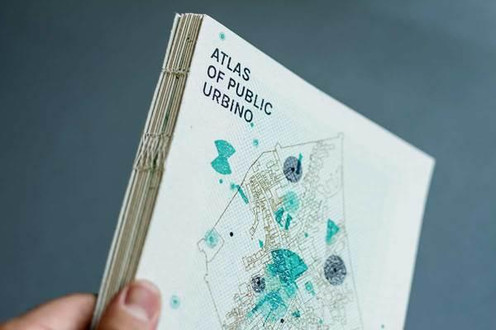
Atlas of public Urbino è un progetto svolto all’ISIA Urbino durante un workshop tenuto da Joost Grootens a cui abbiamo partecipato a fine maggio 2013. Si tratta di un atlante che analizza lo spazio pubblico della città di Urbino sotto diverse tematiche. 25 studenti del biennio specialistico in ”Comunicazione, design ed editoria”, divisi in gruppi da 3 persone, avevano il compito di scegliere e approfondire una tematica specifica. Un gruppo esterno coordinava il lavoro. Il tutto doveva essere completato in 40 ore (5 giorni): dalla fase di brainstorming alla produzione dell’atlante stampato.
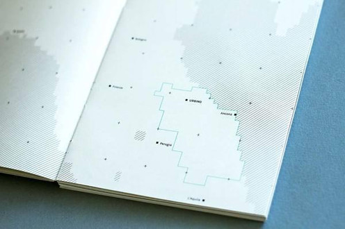
Il riferimento iniziale da cui partire era la Pianta Grande di Roma (Nuova Topografia di Roma) del 1748 di Giambattista Nolli, una delle mappe più interessanti mai realizzate. La Mappa di Nolli è così accurata che è stata utilizzata dal Comune di Roma fino al 1970. All’epoca ha introdotto l’orientamento della mappa verso Nord superando l’orientamento a Est. La Mappa del Nolli affascina e ispira ancora oggi soprattutto per la sua rappresentazione unica e dettagliata degli spazi pubblici di Roma.
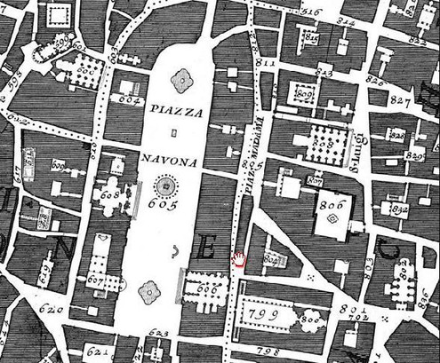
Nolli ha incluso nella sua mappa tutti gli spazi pubblici, interni ed esterni e li ha esposti con estrema precisione mantenendo il loro interno bianco (ad esempio erano evidenziate con questo codice visivo le piazze ma anche gli interni delle chiese); tutte le altre informazioni erano rappresentate in nero. In questo modo la mappa del Nolli non è semplicemente un oggetto funzionale ma suggerisce anche come le persone vivevano a Roma nel XVIII secolo e come era organizzata la società.
Nolli viveva in un periodo in cui la nozione di pubblico e privato poteva essere espressa come un valore binario: privato o pubblico, nero o bianco. Oggi questa distinzione è decisamente più difficile da fare. Cosa è privato in un mondo fatto di amicizie su Facebook, continue telefonate che si svolgono per strada o servizi pubblici come l’elettricità che invadono le nostre case? Per rappresentare graficamente questo nuovo tipo di privato e pubblico sarebbero necessari colori diversi dai soli bianco e nero.
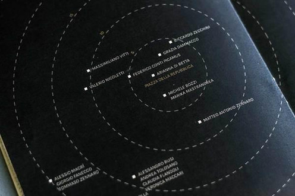
Nell’ambito tematico di nostra competenza (Modifica degli spazi sociali) abbiamo individuato i luoghi pubblici accessibili a chiunque e quelli accessibili attraverso restrizioni (la ricerca è avvenuta sia tramite consultazione on-line che mappatura fatta di persona: Urbino è una piccola città e ci ha permesso di dedicare del tempo a un’indagine in prima persona, locale per locale). Abbiamo capito che alcuni luoghi non possono essere mappati interamente senza prendere in considerazione gli spazi interni ed esterni. Ad esempio alcuni ristoranti e bar “occupano” in maniera naturale l’area pedonale limitrofa. Questo modifica la percezione del pubblico e del privato.

Abbiamo messo in luce una sorta di “mappa sociale“: nel nostro processo di mappatura abbiamo rilevato tutti i luoghi nei quali le persone instaurano relazioni sociali come bar, ristoranti, università, chiese, musei, luoghi di interesse turistico. Abbiamo individuato gli orari di apertura e il numero di sedute e di coperti dei locali. Alla fine del processo abbiamo deciso di dividere in 8 diverse mappe, una per ogni specifica fascia oraria (6-8, 8-10, 10-12, 12-14, 14-18, 18-20, 20-24, 24-6). In ognuna vengono evidenziati luoghi pubblici e privati con variabili visive diverse in modo da far comprendere la modificazione della percezione degli spazi e di conseguenza delle relazioni sociali.
Il processo di creazione della mappa ha richiesto una serie di passaggi tecnici: una volta ottenuta la mappa catastale presso il Comune di Urbino, realizzata in CAD, formato .dwg, abbiamo provveduto a modificata tramite Illustrator, programma di elaborazione immagini vettoriali, con cui l’abbiamo ”sfoltita” dei dettagli a noi non necessari, quali delimitazioni altimetriche ecc. Terminata la semplificazione ci siamo dedicati all’ uniformazione dei tracciati e dei riempimenti, seguendo le linee guida dell’intero progetto come colori, spessori dei tracciati e altri piccoli accorgimenti, con lo scopo di conferire all’atlante un senso di uniformità progettuale.
Siamo poi passati alla ricerca effettiva delle piante dei vari edifici interessati dal nostro progetto, in modo tale da garantire un’effettiva aderenza allo spazio occupato/liberato durante le varie ore del giorno. Successivamente abbiamo applicato i rilevamenti effettuati in precedenza, creando diverse mappe in base alle fasce orarie e mostrando così il mutamento degli spazi pubblici durante la giornata.
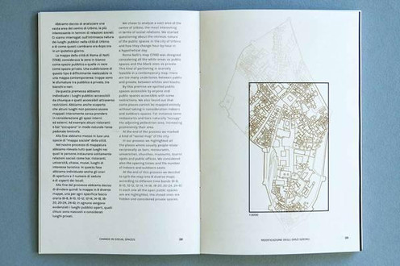
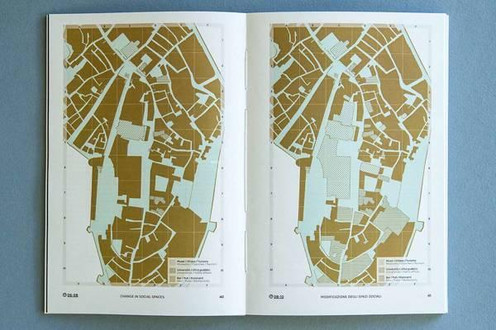
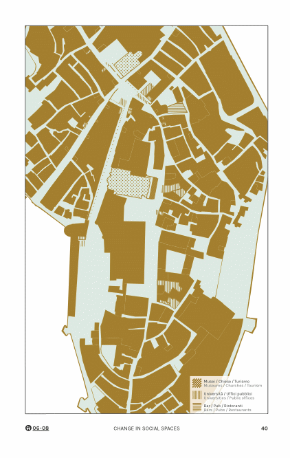
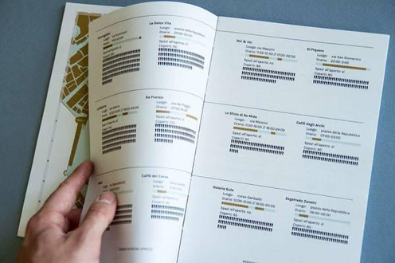
L’atlante considera diverse tematiche divise per capitoli: Appiattimento culturale, Modifica degli spazi sociali, Rumori pubblici, Le conversazioni, Interferenze, Aree di controllo, Scatta condividi perseguita. Un atlante interpretato come spazio pubblico ma anche un libro inteso come strumento.
Perché questo è ciò che un atlante rappresenta: la sua prerogativa di essere uno strumento di informazione. Gli indici e il linguaggio grafico adottato consentono all’utente di creare collegamenti, permettendo di crearsi le proprie storie, le proprie interpretazioni di cosa significa spazio pubblico oggi, in una città italiana come Urbino.
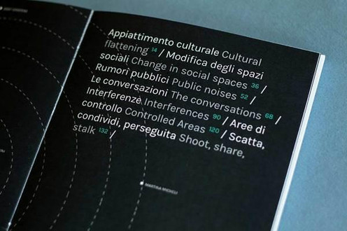
Hanno partecipato a questo progetto: Davide Belotti, Michele Bozzi, Alessandro Busi, Riccardo Cavallaro, Giulio Cesco, Bolla Federico Conti Picamus, Grazia Dammacco, Arianna Di Betta ,Giorgio Fanecco, Claudia Flandoli, Veronica Maccari, Alessio Macrì, Marika Mastrandrea, Martina Micheli, Luca Napoli, Valerio Nicoletti, Camilla Oboe, Paola Panza, Gianluca Sandrone, Lucia Sgrafetto, Andrea Tolosano, Gregorio Turolla, Andrea Vendetti, Massimiliano Vitti, Riccardo Zecchini, Matteo Antonio Zennaro, Tommaso Zennaro.
Altre immagini: http://www.behance.net/gallery/Atlas-of-Public-Urbino/12129215
Alessio Macrì, graphic designer e fotografo, studente del biennio specialistico in comunicazione, design ed editoria all’ISIA di Urbino. Appassionato di grafica e scrittura nell’ambito del visivo; collabora con alcuni studi grafici, principalmente a Roma. Amante del buon cibo e del buon vino.
e-mail: scrivi[at]alessiomacri[dot]com
Andrea Tolosano, graphic designer laureando nel corso di design, comunicazione ed editoria presso l’Isia di Urbino. I miei principali campi di interesse sono la progettazione di libri (dall’ideazione al confezionamento), la tipografia e il disegno.
e-mail: andreatolosano85[at]gmail[dot]com
Tommaso Zennaro, Graphic Designer laureando alla laurea specialistica in Grafica Editoriale presso l’Isia di Urbino, ha una forte passione per la visualizzazione dati, maturata sopratutto nel corso degli ultimi anni. Visualizzazione dati a 360°, sia realizzate tramite disegno manuale che automatizzato con codice di programmazione.
e-mail: tmmsznnr[at]gmail[dot]com
Posted in Entropia, GuestPost | 2 Comments »
10 dicembre, 2013 | di Ernesto Sferlazza
Qualche giorno fa, mentre sperimentavo alcuni possibili usi pratici dell’applicazione web Bing Maps, mi sono imbattuto in un errore, di quelli apparentemente insignificanti, riguardante l’attribuzione di un toponimo: la SP4 “Strada Panoramica Valle dei Templi” ad Agrigento risultava erroneamente denominata “strada provinciale Serralombardi Scassabarile” (http://binged.it/1aBIn0Y ).
Preso inizialmente dalla curiosità, ho cercato di scoprire l’origine di tale errore o, quanto meno, di individuare la “reale” ubicazione della strada sunnominata.
Dopo alcune sessioni di ricerca attraverso i motori di ricerca di internet ho constatato, con un pizzico di sorpresa, che nella rappresentazione virtuale della toponomastica nazionale sono presenti diverse occorrenze della fantomatica strada provinciale “Serralombardi Scassabarile“.
Se si fosse trattato della via Roma o della piazza Garibaldi, non avrei ovviamente dato peso al fatto. In questo caso, però, la presenza di tante ricorrenze omonime su territori lontani tra loro (province di Pavia, Salerno, Taranto, Vibo Valentia, Brindisi, Foggia, Palermo, Agrigento, Ragusa, etc.) mi è parsa alquanto improbabile.
A questo punto, sono entrato in crisi: l’effetto scatenato in me da tale constatazione può essere forse paragonato a quello che si riscontra in alcuni personaggi pirandelliani, causato da dettagli apparentemente insignificanti (il setto nasale leggermente deviato in “Uno, Nessuno e Centomila”; il passaggio del treno nella novella “il treno ha fischiato” – per fortuna, ci tengo a precisare riguardo al caso mio, l’unico effetto prodotto sono state le considerazioni che ho cercato di esprimere in queste poche righe, senza trascendere oltre).
Come se già non bastasse la vasta schiera di filosofi, i quali con i loro ragionamenti hanno presentato diverse visioni, talora diametralmente opposte di ciò che consideriamo comunemente mondo reale. Adesso ci si mette pure la rete a mettere in crisi la percezione del mondo (per fortuna quello virtuale, in questo caso).
Lo so, non è la prima volta che uno, fidandosi del navigatore satellitare, finisce su un percorso morto o rimane incastrato con l’automobile in un vicolo del centro storico, ma in tali casi si tratta “solo” di carenza di dettaglio o di mancato aggiornamento.
La genesi, invece, dell’anomalia riguardante la Strada provinciale in questione sembrerebbe di tipo diverso: una strana “infestazione” che mette in luce le criticità di una immensa banca dati distribuita, generata e gestita senza regole precise e controlli non sempre efficaci.
Non voglio cimentarmi in tentativi di dare una spiegazione del perché o di come ciò possa avvenire, se tali “semi infestanti” siano introdotti volutamente da qualcuno (teorie complottiste, sabotaggio) o se, più probabilmente, si generino automaticamente per effetto di qualche criticità negli algoritmi che stanno alla base dei motori di ricerca o di popolamento automatizzato delle grosse banche dati: non ne ho le competenze.
Provo, invece, a saltare alle conclusioni, a trovare una morale: qual è l’approccio giusto che dobbiamo avere riguardo alle informazioni che internet ci fornisce?
Ritengo che dobbiamo abituarci a passare da una concezione deterministica ad una probabilistica, prendere coscienza che ogni notizia o informazione ha un suo grado di attendibilità, teoricamente variabile dal valore “0″ (le cosiddette “bufale” e i macroscopici “strafalcioni”) al valore “1″ (informazioni assolutamente veritiere – ma esistono davvero?).
Per poterci orientare correttamente e valutare autonomamente tale grado di attendibilità dobbiamo quindi adottare strategie quali, ad esempio, la consultazione di più fonti (da valutare anch’esse).
Al contempo, tuttavia, non bisogna esagerare, per non rimanere invischiati o troppo rallentati nel tentativo di ricercare la certezza assoluta, che rappresenta, in tale approccio probabilistico, un limite non sempre raggiungibile.
Ma poi, in fondo, chi se ne frega se qualcuno ha sbagliato il nome: a me basta passare da quelle parti al tramonto e godermi lo spettacolo.
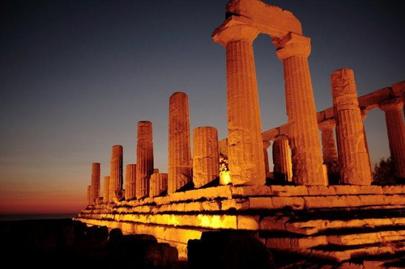
Tempio di Giunone Lacinia nella Valle dei Templi di Agrigento | fonte http://www.lavalledeitempli.net
Posted in Entropia, GuestPost | No Comments »
11 novembre, 2013 | di Giancarlo Antonello
Ho molto pensato se scrivere o no queste poche righe, perché potrebbe sembrare che lo facessi per “sponsorizzare” un progetto che a me piace; alla fine ho deciso che in ogni occasione ci sono i maligni e quelli in buona fede e così vi invio queste mie considerazioni, pensando che apparteniate alla seconda categoria.
Sono più di tre anni che uso geopaparazzi, cioè fin dalla sua nascita con i suoi bachi e i suoi problemi. Mi sento onorato di aver contribuito allo sviluppo di questo software, sia pure in modo passivo, nel senso che non ho scritto neppure una linea di programma ma ho testato il software in lungo e in largo per i miei bisogni di turista fai da te.
Due anni fa, durante una vacanza in un’isola greca con mia moglie, seguendo con la cartina del luogo un sentiero segnato male ci siamo persi.
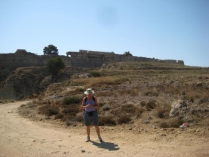Fortezza di Antimachia a Karadameno, Isola di Kos. Geopaparazzi su HTC Wildfire.
Erano le tre del pomeriggio e c’era il sole, ma … fortunatamente avevo scattato molte foto e aiutandomi un po’ con le immagini e un po’ con il ricordo dell’orografia del luogo riuscimmo, per altra via e con tre ore aggiuntive, a ritornare al luogo di partenza. Mi dissi: mai più dovrà ripetersi un caso analogo!
E da quel giorno geopaparazzi mi segue ovunque.
Vi scrivo alcuni accadimenti banali, ma credo significativi, per far capire ai vostri lettori eventualmente interessati come sia utile questo strumento.
- Mia moglie ed io per i nostri viaggi ci affidiamo regolarmente al sito booking.com. Di solito sono abbastanza precisi, ma… vi lascio intendere dalla email che mia moglie ha mandato al sito durante le vacanze:
“Gentili Signori, siamo utenti di booking.com e abbastanza soddisfatti del servizio che viene riservato. Tuttavia abbiamo un’osservazione da fare: essendo dotati di GPS per rintracciare agevolmente la struttura dove andremo a pernottare, abbiamo rilevato che le strutture alberghiere a Kalymnos -vedi hotel Panorama- ed a Astypalaia -vedi studio Ixthioessa- ma anche altre di cui abbiamo verificato la posizione (vista mare studios: sulla vostra mappa è segnalato in collina ed invece è a un centinaio di metri dal porto), sono segnalate nelle vostre mappe a distanze variabili da 500 a 1000 metri rispetto alla posizione reale. E’ importante che le coordinate GPS corrispondano alla posizione reale della struttura perchè è anche in base alla posizione della stessa che si fa la scelta.
Ixthioessa ad Astypalaia: sulla Vs. mappa: lat 36.54874 lon 26.35278 a noi risulta lat: 36.54978 lon: 26.35557
Vi chiediamo di verificare e rettificare le posizioni.
Cordiali saluti luciana a.”
-
Quest’estate ero a cercar funghi con un gruppo di amici; all’ora di tornare alla base l’opinione sulla via del ritorno da prendere non era esattamente condivisa: alcuni dicevano “di qua” altri “di là”. Prendemmo una delle due direzioni e, fatti pochi metri, il mio amico geopaparazzi mi mostrò che la direzione era sbagliata. Ovviamente la rettifica fu immediata e alcuni amici si mostrarono interessati a quello strumento.
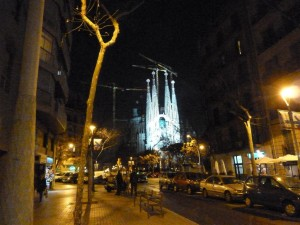Al ritorno verso l’albergo, guidati da geopaparazzi, nella Barcellona notturna.
- Ero in ferie con mia moglie a Barcellona (ebbene sì, sono spesso in giro perchè sono in pensione da dodici anni ormai) per la prima volta, e visitando la città è difficile rendersi conto di quanto passi velocemente il tempo se non quando si accendono le illuminazioni stradali e improvvisamente ci si sente sperduti. Naturalmente in una città non c’è rischio di perdersi (taxi e indirizzo dell’albergo risolvono tutti i casi) ma l’idea di vedere anche aspetti della città notturna ci piaceva e così ci permettemmo una serata tarda in luoghi qualsiasi con la certezza che geopaparazzi ci avrebbe riportati a casa. In albergo mia moglie mi disse “regala 50€ per una pizza a chi ha sviluppato quel marchingegno (proprio così disse: marchingegno!)” e così feci: non succede spesso che una donna apprezzi così apertamente certa tecnologia ….
-
Un amico camminatore con poca esperienza delle montagne del meranese mi chiese un giorno di indicargli un bel percorso in alta quota. Stavo per raccontargli una delle mie gite, quando mi venne l’illuminazione. “che cellulare hai?” gli chiesi. Mi fece vedere un HTC. “Magnifico” dissi. E gli spiegai come scaricare Geopaparazzi, come vedere i percorsi in Google Earth, ecc. ecc.. “Ti manderò via e-mail le istruzioni per usare quel software insieme al file del percorso che stavo per raccontarti. Se avrai problemi, telefonami”. Ci lasciammo così e gli inviai quanto promesso. Era un mercoledì (lo ricordo perchè la storia è recente) e il lunedì successivo mi arrivò una sua e-mail carica d’entusiasmo sia per il luogo visto che, soprattutto, per la semplicità con cui aveva potuto seguire il percorso.
Potrei raccontare ancora per molto, ma credo di aver superato il limite di tolleranza di ogni buon lettore “scientifico”.
Nel frattempo il mio hardware si è evoluto. L’HTC era troppo lento e spesso “crashava” per la mia impazienza a spostare le mappe sul monitor. In giugno 2013 mi sono regalato un Samsung Galaxy Note2 N7100: una bomba!!! Ci ha accompagnati ad Astypalea (Grecia) senza un attimo di incertezza. Sarà la ns. guida fino a quando… non sarà diventato troppo lento anche lui.
Ci sono ancora alcune cose che mi piacerebbe veder fare a geopaparazzi ma mi rendo conto che non posso sempre chiedere e mai dare. Sono sicuro, tuttavia, che l’autore di geopaparazzi continuerà, come nel passato, a curare lo sviluppo e la manutenzione di questo software che ormai chiamo “geofriend” e prima o poi i miei desideri saranno esauditi perchè saranno diventati necessità per molti.
Per finire un consiglio ai turisti fai da te: è sempre bene viaggiare anche con una cartina della zona, oltre che con geopaparazzi: qualche volta batterie e/o satelliti giocano brutti scherzi…
Grazie per l’ospitalità sul Vostro guest post e per la vostra attività su TANTO.
Posted in GuestPost, Strumenti | 5 Comments »


{kind=link}
{kind=link}
{kind=link}
{kind=link}